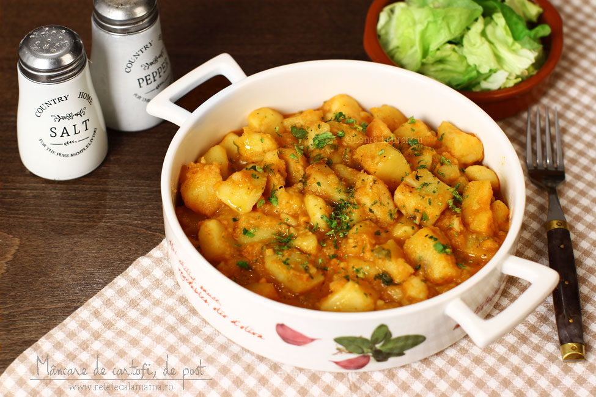

Mâncare de cartofi (tocăniță) simplă, de post

Mâncare de cartofi, rețetă culinară.
Tocăniță simplă de cartofi, rețetă pas
Cum se face o mâncare de cartofi simplă ș
i rapidă, de post
Această rețetă de mâncare de cartofi, simplă și rapidă,
perfectă pentru a fi consumată ca atare, lângă o salată,
dar și pe post de garnitură (știți de bine se potrivește c
u chiftele? dar lângă o friptură bună, ce să mai povestim,
deliciu!), a intrat în repertoriul meu culinar cu multă vreme î
n urmă, pe când eram o tânără soție care încerca la rând rețetel
e din cartea Silviei Jurcovan. Față de varianta maestrei Silvia,
rețeta de mâncare de cartofi pe care v-o propun azi nu diferă p
rea mult, în ce privește lista ingredientelor. Cu timpul, însă,
am mai micșorat cantitatea de ulei și am deprins niște mici pontu
ri care mă ajută să obțin o tocăniță de cartofi consistentă și foarte gustoasă.
Ingrediente:
- 1 kg. de cartofi (cântăriți gata curățați de coajă),
tăiați în cuburi egale, recomand cartofii cu coaja rozalie,
care nu sunt atât de sfărâmicioși
- 100 de grame de ceapă tocată fin
- 2 linguri de ulei
- 1 cățel de usturoi zdrobit
- 1 linguriță paprika dulce, aromată
- 1 legătură de pătrunjel verde, tocat fin
- sare și piper
- opțional: 1 frunză de dafin
Mod de preparare
- Se încinge pe foc mediu o cratiță de 1,1/2 – 2 litri. Se adaugă uleiul și imediat ceapa tocată fin, usturoiul zdrobit și, dacă folosiți, ardeiul gras tocat în cubulețe mici. Repet, folosirea ardeiului pentru tocănița de cartofi este opțională. S-a întâmplat să am un ardei gras portocaliu prin frigider și așa a ajuns și el în această combinație.
- După ce ceapa s-a înmuiat, se adaugă paprika dulce și, dacă folosiți, tot acum se adaugă și pasta de ardei (opțional). Se amestecă rapid paprika în ceapa călită și imediat se adaugă 1/2 de litru de apă fierbinte, pentru că paprika se caramelizează ușor și își schimbă atât culoarea cât și aroma.
- Se adaugă în cuburile de cartofi. E important să fie cât de cât egale, ca să se gătească în același timp. Dacă e cazul, se completează tocanița de cartofi cu apă fierbinte, doar atât cât e nevoie pentru ca să fie acoperiți cartofii. Adăugăm frunza de dafin (doar dacă vrem) și sare după gust.
- În mod normal, niște cuburi de cartofi cu latura de aproximativ 3-4 cm ar trebui să fiarbă bine, la foc mediu, în vreo 20 de minute. După 16-17 minute, dacă deja au fiert cartofii dar mâncarea vi se pare încă prea lichidă, scoateți 2 linguri de cartofi fierți din zeamă. Zdrobiți-i cu o furculiță și adăugați pasta de roșii, dacă alegeți să o folosiți. Mie îmi place să o pun pentru că mi se pare că mâncarea de cartofi are, totuși, nevoie de puțină aciditate.
- Diluați imediat amestecul de cartofi zdrobiți și pastă de roșii cu puțină zeamă fierbinte. Amestecați și turnați această pastă în cratița cu tocăniță de cartofi, amestecând bine după aceea. Mai dați 2-3 clocote și mâncarea se va îngroșa frumos, fără să fie nevoie să adăugați făină sau alt amidon față de cel conținut în mod natural de cartofi.
- otriviți gustul mâncării cu sare și piper. Gustați, e posibil să fie nevoie de mai multă sare decât vă așteptați, pentru că de obicei cartofii absorb mai multă sare decât alte legume. În final, opriți focul și presărați mâncarea cu pătrunjelul tocat fin.